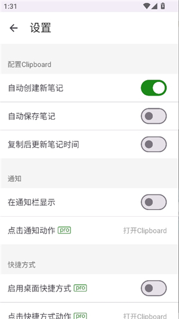

把剪贴板做成工作流枢纽：我用 clipboard 串起了移动端的阅读与整理
每天在手机上处理几十段复制粘贴，以前切五个 App 才能走完一条信息链。装了 clipboard 之后，复制这个动作自己分流：去查、去存、去贴，全程人不挪窝。
以前这条链要切五个 App
我是那种手机一天亮屏八小时以上的人——刷文章、看论文、查参数、填表格，信息在不同 App 之间来回跳。以前处理一段"复制下来"的内容，典型流程是：
看到一个生词 → 切浏览器 → 键盘敲上去搜 → 复制释义 → 切回原文 → 贴在边栏 → 继续读
中间还穿插：值得存的话术（回客户的那句"稍等帮您查"）要手动切笔记 App 建条目，用完的临时数据（一个快递单号）要记得清剪贴板防止误贴，跨 App 复制完了还担心"刚才复制的那个地址还在不在——要不我再复制一遍保险"。
算下来，每处理三段信息就有一次"手动确认剪贴板内容还在不在"的动作——这个确认本身就是浪费。
把 clipboard 插进复制这个节点
clipboard官网 这款工具干的事说穿了很简单：它让"复制"这一个动作，同时承担了"记录历史 + 调出粘贴 + 发起搜索 + 保存备忘"四个出口。也就是说，复制不再是整条工作流的起点，而是枢纽——从它分岔出去，每个方向都是现成的。
核心能力分两层，都是安装后一次性配好就不用再管的——安装包直接从clipboard下载就行：
第一层是"记录不丢"。安卓 10 之后系统后台直接读剪贴板被锁死了，它用无障碍权限"听见"复制动作、用悬浮窗权限"浮上来"给你看——两个权限顺序不能反，先给无障碍让复制历史先积起来，再开悬浮窗就不会先看到一个空窗口。配完之后，任何 App 里复制的东西都自动进历史，列表里能按时间拉回来、能关键字搜、能一键贴出。
第二层是"复制即分流"。Quick Search 开关打开后，复制一个词的当下就能直接发起网络搜索——人还留在原文里，不用切出去打字。这个功能的开关位置和自定义搜索引擎入口去clipboard文档翻一下更清楚。搜到有用的内容顺手转一条备忘存起来，下次要贴直接从悬浮窗调出来按一下就行。
整条链现在是：
看到生词 → 复制 → 点悬浮窗里的搜索按钮 → 浏览器自动搜 → 看完关掉回去继续读
看到值得存的话术 → 复制 → 长按转备忘 → 打个标签（比如"客户沟通"）→ 以后在任何输入框长按都能调出来贴
少了什么？切笔记 App、手动打字搜、切回原文、二次复制确认。一条链从五个 App 切换降到了一个：悬浮窗。
两个最容易断链的环节
实操下来有两处容易踩坑，不说的话新用户大概率会觉得"这软件不好用"。
权限顺序反了 = 空窗口焦虑
先开悬浮窗再给无障碍，你会先看到一个永远空着的历史窗口——复制什么都不进来，以为 App 坏了。反过来先给无障碍、后开悬浮窗，复制历史从第一秒就开始积累，窗口出来的时候已经有东西在里面了，体验差十倍。
备忘别把三件事塞进一条
我刚开始建备忘图省事，把回客户的三句不同话术写在同一条里，结果列表预览只露前几行，找的时候来回划半天。后来拆成"一物一条"：一个话术一条、一个地址一条、一个模板一条，每条开头写清楚用途（比如"回客户：稍等帮您查"），列表扫一眼就能点对。备忘多了之后靠标签分组，比翻列表快得多。
什么场景适合、什么场景不划算
这套工作流跑顺了之后，每天少了两次手动复制的确认、三次切 App 找笔记的跳转——都是细碎但高频的动作，攒下来省的是"被打断的注意力"而不是纯粹的时间。
但也有边界。如果你每天复制不超过五段、所有内容都在一个 App 里（比如只用微信），装了也是吃灰。另外它的 Quick Search 用的是系统默认搜索引擎——默认百度够用，想自定义搜索引擎入口就得自己改系统设置，这一步软件不管。
关于费用也提一句：安装和七天试用全功能开放，试用后是一次性买断不是订阅。剪贴板管理这类工具我不想按月付钱——能用十年也就付一次的模式，和这个工具的定位倒是挺配的。

现在这套链在我手机上已经跑了快两个月，中间试过换别的剪贴板工具但又换回来——它最让我留下的不是功能多，而是"复制"这个动作本身没被我重新设计过就自然融入了流程。没有改变我处理信息的方式，只是在中间那个节点上多放了一个分流器。
资料方面，我把这套玩法的完整参考同步放在了 GitHub、Gitee、GitCode 三个仓库里，国内访问优先 Gitee 或 GitCode 更稳。